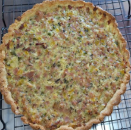

← Volver al módulo 4

Tartaleta Salada
Tartaletas saladas rellenas de queso, jamón, vegetales y crema, ideales para aperitivos o entradas.
Ingredientes
- 1 taza de harina
- 8 gr de polvo de hornear (pH)
- ¼ taza de margarina sin sal
- 20 gr de azúcar
- ½ cucharilla de sal
- c/n de leche
Relleno
- 125 gr de queso rio grande
- 1 cebolla blanca
- 1 pimentón verde y 1 amarillo
- 1 cucharada de orégano
- 2 huevos
- Pimiento y ajo al gusto
- ½ taza de crema de leche
- 100 gr de tocino
- 1 bs de cilantro
Preparación
Preparar el mise en place.
Mezclar los ingredientes secos (harina, pH) y añadir un poco de leche. Compactar la masa, realizar la técnica de fresado y dejar reposar 15 min.
Estirar la masa con uslero y colocarla en el molde.
En un sartén, sofreír los ajos en brunoise fino, añadir la cebolla hasta que cristalice, luego agregar los pimentones cortados en brunoise.
En un bol, batir 2 huevos con la crema de leche, añadir orégano y cilantro en chiffonade, sazonar al gusto y verter sobre la masa.
Hornear en una charola a 175-180 °C durante 40 min.